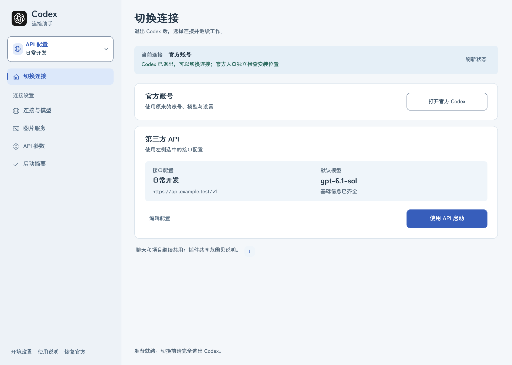
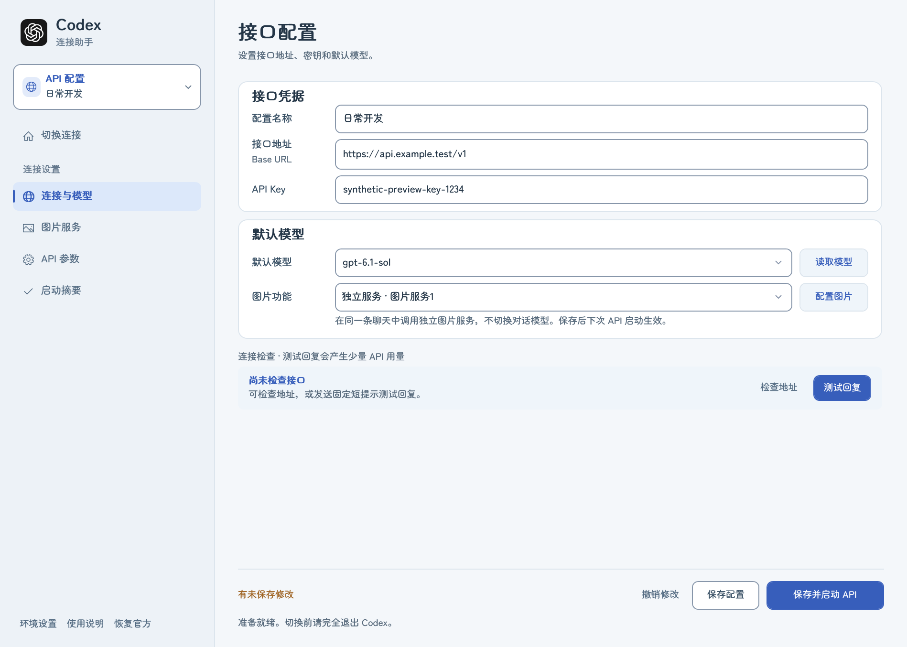
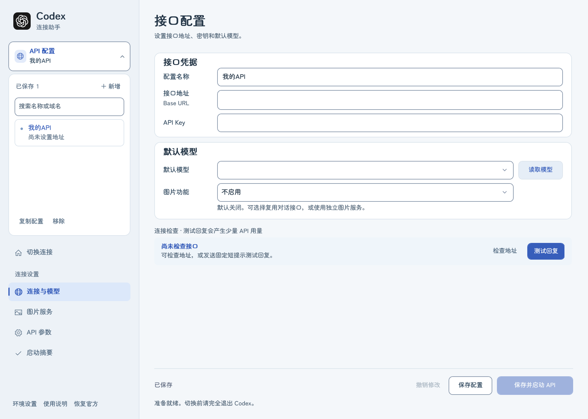
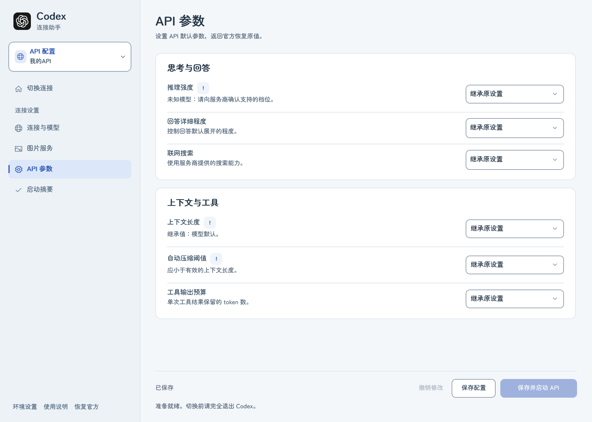
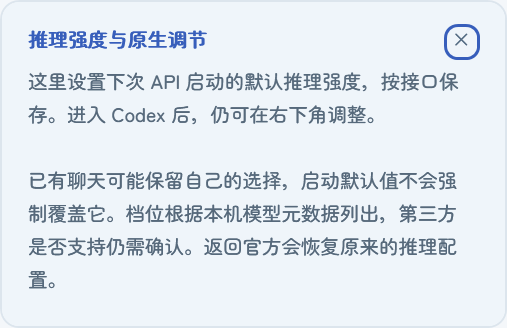
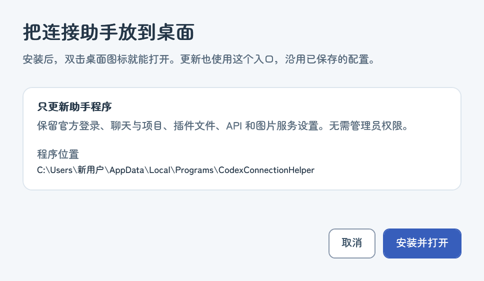
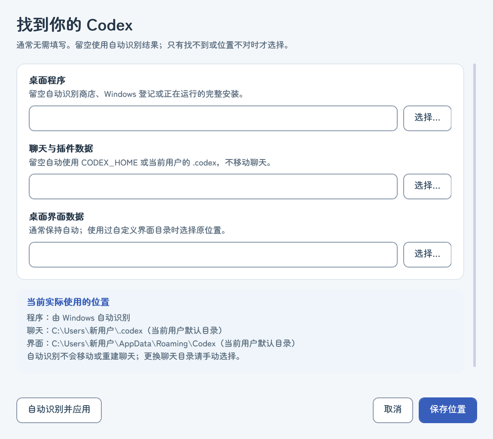
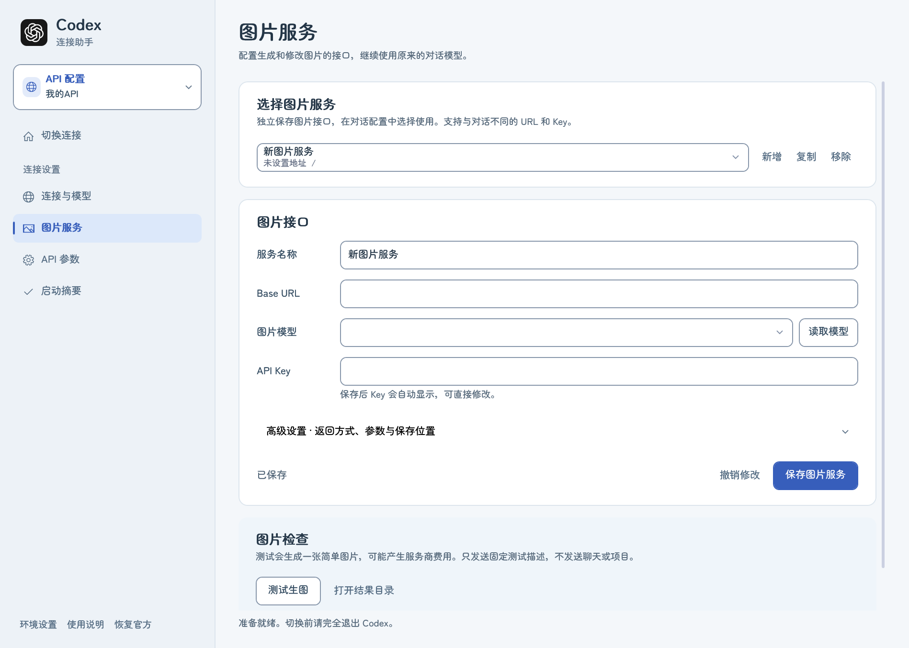
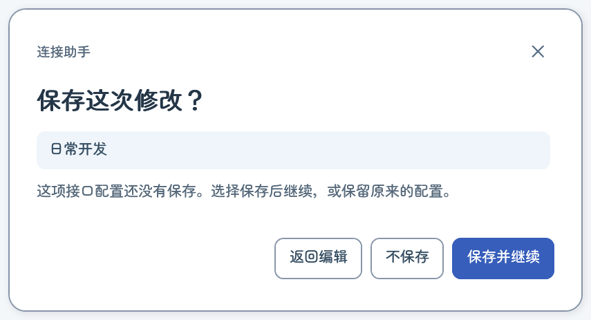

从首页切换连接
默认首页将官方账号与选中的 API 分开显示，上方显示已应用的连接配置和 Codex 运行状态。等待任务结束，正常退出 Codex（含托盘）及 CLI/后台引擎后，点击 刷新状态，再选择 打开官方 Codex 或 启动选中的 API。首页的 API 启动会先保存当前接口；底层流程与配置页一致。
左上方 API 配置 以带图标和蓝灰边框的卡片显示当前名称，点击后向下展开加大的列表、搜索和管理操作。默认窗口和左侧配置区已放大；小屏幕会按可用区域调整，缩小时侧栏导航可以滚动。选中另一接口后自动收起，也可按 Esc 收起。列表可搜索名称或域名，搜索不会丢失正在编辑的内容。撤销修改 只还原未保存的输入，保存的密钥保持不变。
连接检查 仅在连接与模型页直接显示。地址检查、读取模型和测试回复在后台执行，等待时可以切换页面并编辑 API 参数。检查使用开始时的配置，等待期间修改会保留；旧结果不会确认新配置，也不会覆盖草稿。保存、启动、切换配置及重复测试在检查结束后恢复。模型列表可读与完整回复成功分别显示；关闭助手会取消本地等待。

截图为示例接口与模拟运行状态。实际运行状态与网络结果以本机检查为准。
打开连接助手
关闭旧启动器窗口，再双击桌面的 Codex 模式切换。新版窗口标题是 Codex 连接助手，采用雾蓝与白色的轻日系界面。原来保存的接口会自动读入，已有 Key 会自动回显，保存后仍然显示。

添加和使用多个 API

- 展开左上方 API 配置，点击 ＋ 新增，填写名称、HTTPS Base URL、自己的 Key 与默认模型。每个接口分别保存凭据和参数。
- 点击 读取模型，生成该接口的原生模型目录。只有精确匹配本机元数据的模型进入右下角菜单；未知别名可手动输入，能力仍需确认。
- 检查连接 只请求模型列表，不发送聊天，也不代表生成、工具调用已经全部验证。
- 点击 保存配置 或按 Ctrl+S。保存只更新启动器自己的文件。
- 等任务结束，完全退出 Codex（含托盘）及 Codex CLI/后台引擎，再点击 保存并启动 API。打开原聊天，检查模型后继续。
- 回官方时同样先退出，在首页刷新状态，再点 打开官方 Codex。当前连接与左侧选中的待启动接口分别显示。
复制配置可复用同地址的设置。更换地址时必须重新输入对应 Key，避免把旧 Key 发给另一个接口。切换列表或关闭窗口时，取消操作会保留尚未保存的输入。
API 参数怎样设置
参数分为“思考与回答”和“上下文与工具”。推理强度、上下文、压缩行旁的 ! 可点击查看说明，点击关闭、空白区域或按 Esc 收起。换模型后不支持的原推理档位会提示重新选择，避免静默改值。
| 上下文长度 | 留空或选择继承，使用官方原值；未设置时使用模型默认。可填写 200K、1M 或整数，单位为 Tokens。设置更大不会扩容。 |
| 自动压缩阈值 | 由 Codex 在预算达到阈值时压缩上下文；自定义时应小于有效窗口。压缩不等于每次向 API 发送全部历史原文。 |
| 联网搜索 | 继承、关闭、缓存或实时搜索。实际可用性由模型与服务商决定。 |
| 回答详细程度 | 继承、简洁、适中或详细；服务商须支持对应参数。 |
| 工具输出预算 | 控制工具结果在上下文中的保留预算。它不是回答的最大输出长度。 |
| 推理强度 | 按接口设置下次 API 启动的默认值，也可继承原值。档位依据本机模型信息；进入 Codex 后仍可在右下角调整，现有聊天可能保留自己的选择。返回官方恢复原值。 |
参数按接口保存。接口内换了模型，也要确认这些值适合新模型。在 启动摘要 页点 恢复继承值，可以撤销当前接口的高级覆盖；保存后在下次启动应用。

感叹号说明卡片示例：

首次安装与保留配置更新
完整解压 ZIP，双击 Setup.exe，点击 安装并打开。以后双击桌面 Codex 模式切换，不需要打开终端。
更新时关闭旧助手，再运行新版 Setup.exe。只替换助手程序，沿用 API 与图片设置；不更新官方登录、聊天、项目或插件数据。官方 Codex 可以继续运行。便携使用可直接双击 Launch.exe。

自动识别与插件检查
自动识别并应用 一次点击就保存并刷新，无需再保存；原自定义数据目录会保留。环境变量仍优先，助手不修改系统环境变量。插件清单检查不要求界面目录已经存在，默认项目范围不再随助手安装目录变化。
账号连接超时会保留已读取的插件与技能清单。官方和 API 的账号插件市场范围可能不同，不表示本地文件被删除，也不需要因此重设环境。

不同电脑与安装位置
点击左下角 环境设置 查看实际程序、聊天与界面目录。标准 Windows 安装按系统登记查找，装在 D 盘也不依赖 C 盘固定路径；未登记的完整安装可手动选择桌面 EXE。
聊天目录优先使用 CODEX_HOME，界面目录优先使用 CODEX_ELECTRON_USER_DATA_PATH，其次是手动选择，最后是当前用户默认目录。仅支持本机完整路径。请选原数据目录，空目录会被阻止；位置设置不会移动聊天。
改变聊天或界面目录前完全退出 Codex 和 CLI；API 恢复尚未完成时不能换到另一聊天目录。移动启动器文件夹后运行“修复桌面快捷方式.cmd”。新版启动器独立使用当前 logo；关闭旧启动器再打开即可，不需重启 Codex。
新用户不带默认供应商或密钥。Prepare-Share.ps1 按公开清单生成分享目录，不复制本机登录、接口配置与聊天。首次使用及开源说明见 README.md。
检查 API 是否能正常回复
在连接与模型页使用直接显示的 连接检查。检查地址 读取模型列表，不发送聊天；测试回复 用当前地址、Key 和模型发送固定短提示，可能产生少量 API 用量，不发送原聊天、项目或文件，也不切换官方登录。
只有完整文本回复与明确完成事件都收到才显示连接成功，并显示 HTTP 状态和耗时。密钥错误、地址/模型不可用、限流、超时和残缺协议分别提示。模块启动最多 15 秒，请求最多 45 秒，可在底部取消检查；取消不能撤销已产生的用量。
此检查只验证当前模型的短 Responses 回复，不证明工具、长上下文、侧栏状态或桌面通知正常。支持 Windows 内置 PowerShell/WPF 与完整 Codex 桌面安装；其他系统、受限策略或未来非标准安装不能保证兼容。
HTTP 兼容修复
新版 API 启动会运行一个本机兼容模块，将对话请求通过 HTTP 转发给选中的服务商，用于处理服务商拒绝 WebSocket 的情况。仍使用原数据目录与供应商身份，继续显示原聊天。
模块随 Codex 退出，不记录聊天或密钥。API 模式每次都通过启动器打开；重启电脑后再点“保存并启动 API”，接口设置仍会保留。官方模式不运行此模块。
兼容模块只处理标准 Responses 与模型路由，请求体上限 32 MiB，单请求最多 20 分钟。工具、联网及压缩能力仍取决于服务商。保留新增的 HttpBridge.cs 和 HttpBridge.ps1 文件。
插件和回复结束
共用的是本地插件文件与本地启用配置；账号管理的安装记录仍按登录身份读取。GitHub 等官方云端连接的授权属于官方账号，第三方 API Key 不会继承；插件不显示并不代表文件已删除。本机已有的 GitHub CLI 或独立 MCP 使用自己的授权。
兼容模块会识别明确的 Responses 完成事件。接口仅返回 [DONE] 时，只有响应身份和全部输出项完整、没有失败标记，才补齐完成事件。不会根据超时或已显示文字强行结束。桌面通知仍遵循 Codex 的通知设置及窗口焦点策略。
用户已确认第三方 API 的侧栏完成标记正常；原生系统弹窗仍需独立观察。不必立即中断官方对话，待下次正常退出后通过启动器打开 API，再用简短消息验证。
诊断文件为 %LOCALAPPDATA%\CodexLauncherSafe\http-diagnostics.jsonl，仅包含时间、HTTP 状态与完成标记，不保存消息、密钥或会话 ID。
怎样与官方配置配合
两种模式直接使用同一份本机记录和项目。启动器不增加聊天副本，不改写聊天数据库和历史文件，保留其他工具权限或插件开关。
API 模式期间仍会临时修改官方数据目录中的连接配置和 auth.json。 返回官方时恢复保存的登录与受管理参数。其他设置继续保留。官方应用安装文件没有改动，也没有界面注入和后台自动额度切换。
不要同时运行多个连接管理工具来修改这套配置。启动器检测到登录、路由被外部修改，或上次切换未完成时，会停止普通切换，让你确认恢复，避免直接覆盖。保护不能替代其他工具遵守同一套协作规则。
本机文件共用不代表 ChatGPT 云端聊天、云任务、账号权益和全部插件授权共用。长聊天会遵守 Codex 的上下文压缩机制，不保证每轮发送完整历史。
密钥、关机和恢复
偏好、接口和备份关机后仍保存。启动器的 Key 副本及官方登录备份使用当前 Windows 用户的 DPAPI 加密。API 模式下，Codex 标准 auth.json 使用临时本机凭据，实际服务商 Key 通过本机进程管道传入 HTTP 兼容模块，在内存中使用。
保持 Codex 关闭，点击左侧底部的 恢复官方。当前配置无法安全合并时，先留存加密备份，再恢复切换前的完整官方配置；助手打不开时可运行同目录「恢复官方配置.cmd」。恢复只修复、不启动；官方令牌过期时仍可能需要重新登录。
启动器数据在 %LOCALAPPDATA%\CodexLauncherSafe。请保留恢复备份。默认原记录在 %USERPROFILE%\.codex，原界面在 %APPDATA%\Codex；显式配置了 CODEX_HOME 或 CODEX_ELECTRON_USER_DATA_PATH 时会沿用，备份必须与原目录匹配。
图标、更新与分享
图标按本机用户要求使用 GPT 原生图案，保存在固定缓存目录，文件名按图标内容生成。它不再引用带官方版本号的安装目录。移动文件夹后，运行 修复桌面快捷方式.cmd。
启动器每次查找当前已安装的官方桌面版。官方更新后若模型菜单异常，先使用官方模式，再重新读取 API 模型列表。代理需求取决于具体服务；启动器不更改系统代理。
分享时复制完整的启动器程序文件夹，不附带个人 Key、登录备份或聊天数据。对方需使用 Windows、已安装可识别的官方 Codex，并填写自己的接口。不要发送自己的 .codex 或 CodexLauncherSafe 数据目录。
当前已验证什么
通过了旧设置迁移、多接口 Key 与目录隔离、参数应用和官方恢复、界面保存/新增/复制/切换/取消、外部修改与中断保护、真实 app-server 参数加载与同一聊天往返续接，以及 CCTQ / gpt-6.1-sol 带高级参数的一轮真实简短请求。
尚未在真实桌面聊天中完全退出做往返切换，也未逐个验证所有接口、模型、长历史及云端插件。 首次使用请先在原聊天发一句简短消息确认续接，再继续重要操作。
HTTP 修复已用桌面实际引擎验证 CCTQ 请求，并在重启引擎后恢复同一聊天 ID、正确取回前一轮的合成测试标记；没有发送真实项目内容。详细行为见 README.md，设计参考见 DESIGN.md。官方依据：配置参考 · 身份验证 · 聊天恢复协议。
启动身份与完成提醒
默认目录的已登记官方安装采用 Windows 官方应用入口，图标来自当前官方安装。自定义目录和环境变量继续使用独立子进程，避免忽略原路径设置。原生提醒默认在整个应用失去焦点时触发；侧栏完成点与系统弹窗分别验证。
回复检查显示启动、等待服务商、生成与收尾阶段及秒数。云端插件授权取决于登录方式，共享文件不会自动取得官方账号能力。
测试回复提示
测试时鼠标保持普通箭头。结果显示在软件顶部的小提示中，不使用系统弹窗。成功或取消约 8 秒后收起；失败可以点 × 或按 Esc 关闭，详细结果仍保留在连接检查区。
图片功能 · 0.3.0
连接与模型页可以选择不启用、使用对话接口生图或独立图片服务。对话接口生图复用地址、Key 和配置模型，要求 Responses 图片工具支持；独立服务允许不同域名、Key 和图片模型。
独立服务默认自动识别，返回方式和参数放在高级设置。普通 Images 请求只提交一次，支持的任务先保存再查询；未知格式不自动重试。新建和复制自动编号，手动重名会提示修改。
保存后正常退出 Codex，再通过助手启动 API 加载工具。原聊天中要求使用配置的图片工具；修改图片需提供本机参考图。测试可能收费，使用普通鼠标、页面计时和软件顶部提示。

现有中转站普通对话模型未返回一体图片结果，推荐独立服务；其他站点按接口能力判断。详细协议和实测范围见 README。
检查插件与技能
在启动摘要点击检查当前模式，分别在官方、API 模式检查同一项目。摘要按实际检查显示插件安装数量和启用状态，明细区分本地文件、原生安装、技能发现和 App/MCP 连接；清单成功不等于实际调用成功。
符合条件的本地登记才提供单项修复，先显示目标并备份。账号管理的插件请在原生插件页检查连接，不复制 Token 或强制同步云端记录。
保存和确认提示
界面采用本地寒蝉半圆体，字体随软件携带，不用另外安装。保存提示选择「保存并继续」「不保存」或「返回编辑」；Esc 或关闭等同返回编辑，保存失败仍保留输入。删除提示明确显示目标，默认聚焦取消。恢复官方为明确的应急操作；地址、模型与路径也统一字体。连接检查只在连接与模型页，错误通过顶部提示显示。

Key 与连接检查
Key 默认显示，保存、重开或切换配置后自动回显。图片服务直接填写自己的 Key，不再提供引用选项；本机保存文件仍然加密。检查地址与测试回复直接显示在连接与模型页，无需展开。
配置一致性与恢复 · 0.3.7
图片工具按实际字段值核对，换行、空格、注释和字段顺序变化不会误报。已登记区段完全缺失且登录/接口仍匹配时，下次 API 启动按保存设置重建。启动和恢复均回读实际文件，确认一致才标记完成。
真正的参数变化、重复区段或未知字段仍保留原文件并停止普通切换。正常退出 Codex、托盘和后台引擎后点击“恢复官方配置”；助手先留存加密备份再恢复。主窗打不开时运行同目录“恢复官方配置.cmd”。用户短暂报错尚未复现，不能宣称根因已确认。
自动位置与插件来源 · 0.3.8 测试版
通常无需填写位置。桌面程序从商店安装清单、Windows 登记和运行中的完整安装识别；数据目录使用环境变量或当前用户默认目录。多套备用安装或未登记、未运行的便携安装才需要选择。
官方账号 Figma 与本地市场版本有各自的安装记录。两种模式分别有效检查、目录与项目相同后，可选择“安装或修复所选本地插件”，安装前备份并核对原生登录，安装后检查清单。官方精选市场使用原生市场入口，不能直接安装其缓存路径。
本机当前原生引擎在隔离 API Key 模式安装精选 Figma 时明确返回登录限制，结果为 blocked；助手会显示原因，不伪造安装或复制官方账号授权。真实第三方 Figma 调用尚未验证，请按测试版分享。
0.3.9：自动共享与官方保底
通常不用填写安装和数据目录。启动 API 时自动核对已安装启用的 MIT 纯技能插件，保留许可与来源，通过官方本地市场接口共享；Design Partner 已完成隔离原生安装和技能发现验证。需要 App/MCP 的插件仍单独核对连接，不能复制官方账号授权。
API 配置损坏也能打开助手。官方恢复不依赖图片服务或 API 草稿，切换记录损坏时使用独立加密副本；两份记录都不可用时确认“重置连接并重新登录官方”，先备份当前配置和登录，聊天与项目保留。取消不改文件。切换前仍需正常退出 Codex；磁盘或官方服务故障需先排除。
0.3.10：后台启动修复
修复 API 启动中 HOME 只读变量冲突。原来的接口、模型和 Key 无需重新填写。关闭旧助手后重开即可载入修复；切换时仍需正常退出 Codex。
插件检查未完成会说明超时、引擎退出或后台报错，不代表没有共享，也不能直接判断是网络问题。
0.3.11：中文路径与插件状态
原生检查和安装管道改为 UTF-8，兼容中文及空格路径。API 启动成功不等于插件已安装；助手分别显示本地安装、启用、技能发现和未验证的原生页面/聊天调用。
摘要保留上次启动的本地检查结果。部分查询使用中性提示；失败显示检查阶段。Design Partner 纯技能本地版本可共享，Figma 等账号连接仍需分别核对。
0.3.12：重试也能读取官方插件来源
在 API 模式再次启动时，助手先在原目录恢复保存的官方连接，再读取来源并应用 API。启动检查只读取插件与技能，不等待 App/MCP。已共享副本不会遮蔽原包，摘要分别显示本地版本和实际调用状态。
关闭旧助手再打开载入修复。切换前正常退出 Codex；无需重新填写接口、模型或 Key。Design Partner 隔离重试的本地安装和技能发现通过；真实 API 页面和调用仍需核对。
0.3.13：简短的插件检查提示
顶部仅显示已确认、尚未确认的插件数量，不随着插件名称增多而不断加长。完整名单保留在启动摘要明细；名称来自实际检查。检查后的顶部提示仍可关闭。
0.3.14：提示与明细
普通检查信息使用蓝色提示，明确成功才显示绿色对勾。长提示可点“查看详情”打开完整内容；插件明细可在展开区域内滚动查看。API 已请求启动后的图片提醒不会显示成整个启动失败。
新增和复制 API 配置自动编号。历史同名配置在选择列表中显示前置编号，保存的名称、ID 和 Key 保留。
0.3.18：区分本地共享插件
助手副本显示为“Design Partner · 本地共享”等带来源标记的名称，官方原版本保留原名称。重新打开助手会更新匹配的旧副本和安装缓存，先备份，不卸载插件，也不改变技能或登录。
插件页已加载的名称可能需要重新打开该页或下次正常启动刷新。Figma账号连接单独管理，不按同名自动删除。
0.3.16：插件共享范围说明
点击切换首页底部或插件共享检查标题旁的“!”查看说明。仅自动共享已安装启用、允许复制的 MIT 纯技能插件；账号服务连接需分别核对。没有本地副本不代表 API 模式不可用，清单检查成功也不代表所有插件均能调用。
说明可关闭，支持 Esc 和键盘操作；主标题与确认弹窗移除粉色装饰点。
图文上手：全新配置
先打开官方 Codex 完成登录和数据初始化，完整解压发行包，双击 Setup.exe 安装；以后双击桌面“Codex 模式切换”，便携使用双击 Launch.exe。截图中的接口尚未填写；通常不需要设置安装目录。
填写接口
打开“连接与模型”，填写自己的 HTTPS 地址、API Key 和默认模型。可读取模型，也可手动输入；没有图片需求时保持不启用。测试回复可能产生 API 用量。保存配置不会切换正在运行的 Codex。
保存与切换
正常退出 Codex（含托盘）后，在首页刷新状态并选择官方或 API 启动。撤销修改只还原未保存的输入；确认窗可返回编辑、不保存或保存并继续。
恢复官方
正常退出 Codex 后点“恢复官方”。主窗打不开时使用同目录“恢复官方配置.cmd”。必要时明确确认重置并重新登录官方，聊天和项目保留。插件共享范围可点“!”查看；账号服务授权另行核对。